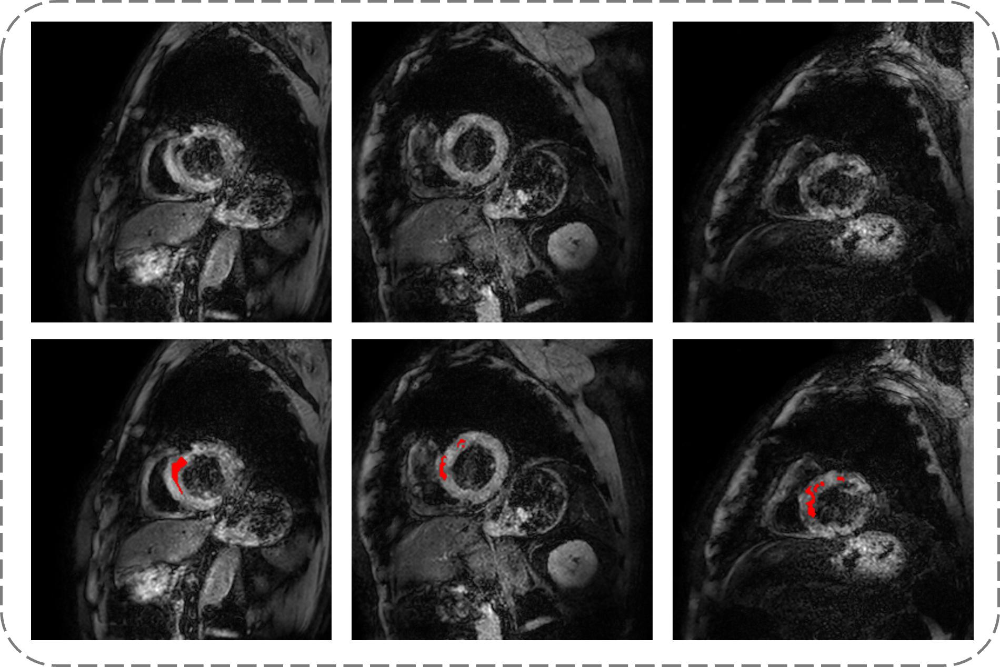
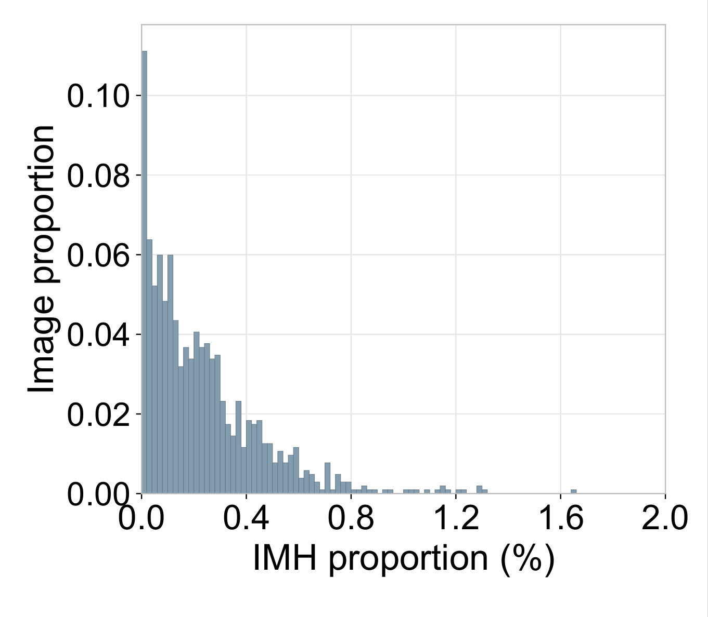
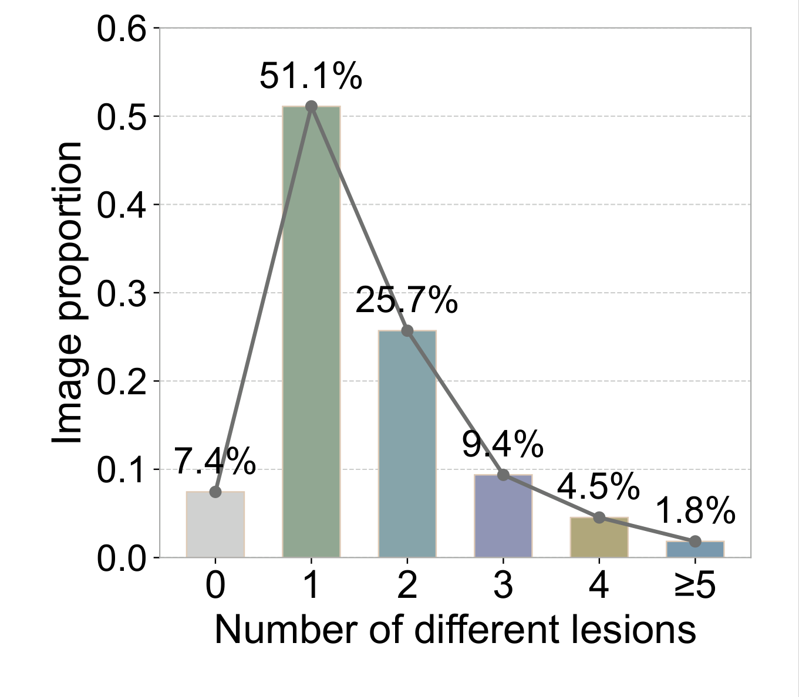

Intramyocardial hemorrhage (IMH) refers to the extravasation of red blood cells caused by microvascular injury and endothelial damage after reperfusion therapy for ST-segment elevation myocardial infarction (STEMI). In the chronic phase from weeks to months after the MI, IMH is linked to ongoing inflammation, adverse left ventricular remodeling and higher mortality rates due to the gradual deposition of iron in the form of hemosiderin within the infarct core. Therefore, IMH plays a crucial role in risk stratification after MI.

(a)
(b)
(c)To overcome the above challenges, we release a dataset and propose a deep learning model IMHNet to segment IMH in T2*-weighted images. Our main contributions are as follows:
Dataset Access
| Item | Description |
|---|---|
| Dataset name | T2*IMH |
| Imaging modality | Cardiac T2*-weighted CMR |
| Inter-slice spacing | 22 mm |
| Spatial resolution | 1.8 × 1.8 mm |
| Clinical population | Patients with STEMI after PCI |
| Internal cohort | 366 patients |
| Annotated slices | 1,035 |
| Annotated slices per patient | 1–3 |
| Lesion-free slices | Included |
| Subject-level IMH-negative cohort | Not included |
You can download the agreement from here. Please make sure that a permanent/long-term responsible person (e.g., professor) fills in the agreement with a handwriting signature. After filling it, please send the electrical version to our Email: fengchaolu@cse.neu.edu.cn (Subject: T2*IMH-Agreement). Please send it through an academic or institute email-addresses such as xxx at xxx.edu.xx. Requests from free email addresses (outlook, gmail, qq etc) will be kindly refused. After confirming your information, we will send the download link to you via Email. You need to follow the agreement. Usually we will reply in a week. But sometimes the mail does not arrive and display successfully for some unknown reason. If this happened, please change the content or title and try sending again.